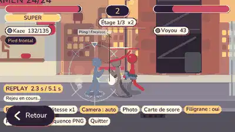
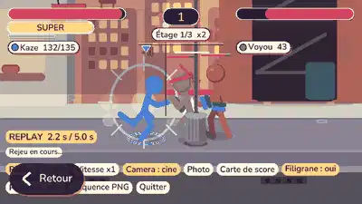
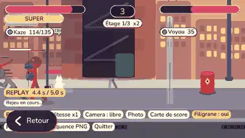
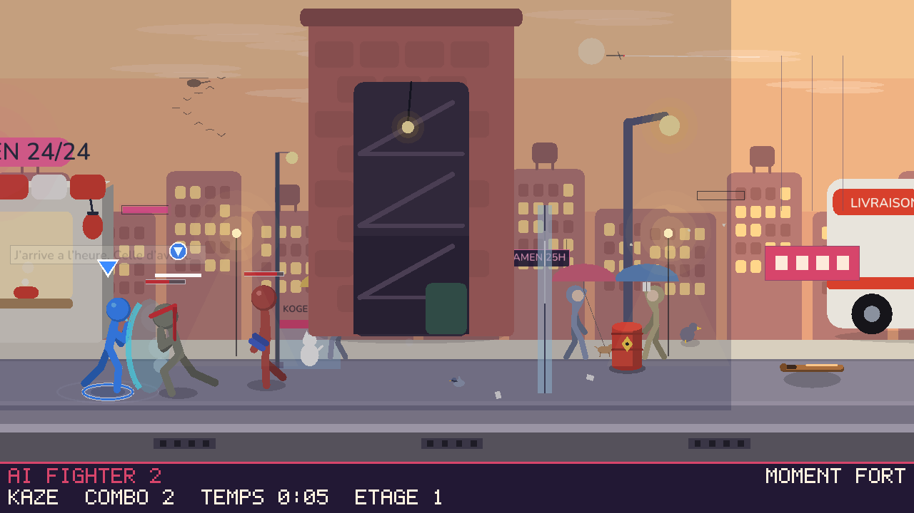

Un KO final, une super, un combo de 15+, un boss qui tombe, l'Ange : le jeu garde les derniers instants EN LOCAL et tu peux en faire un clip (web, mobile), une photo ou une carte de score. Rien n'est envoye a un serveur : le navigateur propose seulement Partager / Enregistrer.

Le replay existant : zoom sur chaque impact fort, ralenti court. Le moteur re-simule le clip, rien n'est filme.

Zoom plus fort aux impacts, ralenti x0,2 sur les coups decisifs, et cadrage de groupe entre deux : la camera se recentre sur les combattants encore debout et recule s'ils s'ecartent.

Glisser pour cadrer, molette ou pincement pour zoomer. Le bouton Camera fait Auto, Cine, Libre. Vitesses x0,1 a x2, filtres Chaud / Froid / Vignette / Cinema en mode photo.

Image propre du moment + bandeau Encre / Papier / Accent : moment fort, héros, combo max, temps, étage. PNG, sans pseudo par defaut. Produite par le vrai moteur.
Bouton « Clip » du replay (navigateur) : le jeu rejoue la fin du moment, interface masquee, pendant que le navigateur enregistre le canvas (MediaRecorder, MP4 sinon WebM). Un bandeau « Partager / Enregistrer » apparaît ensuite : navigator.share sur mobile (Fold 4, Brave), téléchargement sinon. Le jeu ne se fige jamais.
En synchro en ligne chaque client a déjà toutes les entrees : le tampon est reconstruit localement (instantane + entrees, comme le solo), zero trafic en plus, état de la partie intact. Touche R ou le bandeau : la partie continue pendant ce temps, mes touches sont neutres. Test : le rejeu en ligne retrouve la même empreinte chez 2, 3 et 4 pairs. Nouveaux temps forts : boss vaincu, L'Ange tombe.
Sources : src/replay.rs, src/game_replay.rs, src/net.rs (tampon de session), src/share_card.rs, web/index.html (afh_clip_start / afh_clip_stop), tools/partage_gifs.py.